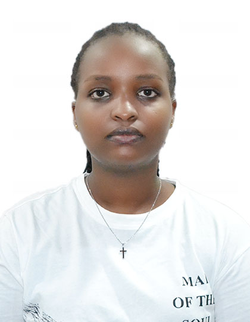

<!DOCTYPE html>
<html>
<head>
<title>
CV SONIA
</title>
<style>
body{background-color:orange;}
 </style>
 </head>
 <body>
 </html>
 

<h1>
<h1 style="color:purple ;"font-family:Helvetica;">CV SONIA</h1>

<h3>
<h3 style="color:green;"font-family:Helvetica;">Biography</h3>

<br>
Name:Mutavu sonia Nyagatare
<br>
Date of birth: 08 Nov 2002
<br>
Email:sonianyagatre23@gmail.com
<br>
linkend in:Sonia Nyagatare
<br>
Nationality:Rwandese 
<br>
Country of residence: Berlin-Germany 
</br>
<h2>
<h3 style="color:green;"font-family:Helvetica;">Work Experience</h3>
<br>
<b>Assistant Manager  Nov 2022- Sept 2023</b>    
<br>
 I was the assistant manager at Hello Market in Rwanda-kigali where i was mostly in charge of the suppy chain of the business but sometimes also took on cashier roles.
 I also took on delivery roles to some of our customers and did pickups from our suppliers directly.

</br>
<br>
<b>Cashier and Waitress  Jan 2022 - Oct 2022 </b>       
<br>
I worked in Bourbon cafe in Kigali-Rwanda which is one of the most prestigious cafes in Rwanda as it mostly interacts with foreigners,and their i had the role of a waitress when i started but after some months was moved to cashier role where i was in charge of taking their orders and at the time i also got some training for Barista.
</br>
<br>
<b>Cyber Cafe assistant  Oct 2021- Dec 2021  </b>
<br>
I worked in D&D cyber cafe and was incharge to help with printing, editing some documents or reports, Online applications for government service for our customers,taking passport pictures and scanning documents and sometimes assisted customers with writing thier recumes or application letters.

<h3>
 <h3 style="color:green;"font-family:Helvetica;>Skills</h3>   
<br>
English native speaker
<br>
Public speaking
<br>
German(A1)
<br>
Team player
<br>
Python language Skills and Html
<br>
Microsoft Office and LATEX

<h3>
<h3 style="color:green;"font-family:Helvetica;>Education Background</h3> 
<br>
Lycee Notre Dame de Citeaux in Kigali-Rwanda  <b>Feb 2015-Nov2017</b>
<br>
Ordinary level of High school <b>H.O.L</b> in Sciences
<br>
Lycee Notre Dame de Citeaux  in Kigali-Rwanda  <b>Feb 2018- July 2021</b>
<br>
Advanced Level of High school <b>H.A.L</b>
High school and majored in Mathematics,Physics and Geography(MPG)
<br>
Gisma University of Applied Sciences in Postdam-Germany  <b>Oct 2023- Present</b>
<br>
Bachelors in Software engineering. 

<h3>
<h3 style="color: green;"font-family:Helvetica;>Hobbies</h3>
<br>
Movies and Music
<br>
Basketball
<br>
Travelling
<h3>
<h3 style="color: green;"Font-family:Helvetica;>References</h3>
<br>
</body><a href="https://www.overleaf.com/read/ynzgbgxvqhyw#7453f7">CV SONIA LATEX</a>

</body>
</title>


